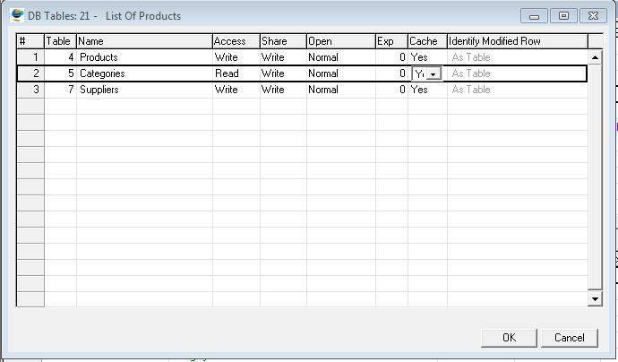

Comparison with Magic's DB Tables Dialog Box
Introduction
This article is one of a series of articles aimed at providing further orientation with the migrated code for Magic programmers. This time we will look at the 'DB tables' screen as it appears in eDeveloper (version 9) and show the equivalent representation of each setting in the migrated code.
Recall that in Magic you press Ctrl + D and The DB Tables screen appears as shown below:

Table Declaration
- At the beginning of the class,in the 'Model' region, declare an object Property for each table to be used.
- Example:
internal readonly Model.Orders Orders = new Model.Orders(); - Example of a Table definition with some properties:
internal readonly Model.Orders Orders = new Model.Orders
{
Cached = false,
AllowRowLocking = true,
//other options
}
Table Options
- A Table in .Net is an object of the Entity Class defined in ENV.Data.Entity.cs
- Note that the Entity Class members include Properties used when defining indexes for tables.
- For a full list of members of the Entity Class see: Entity Members
- The following subsections discuss the equivalent of Magic Table options in the migrated code for the DB Tables (Ctrl-D) screen.
Access
Read
Name in Migrated Code: ReadOnly Location in Migrated Code: Class (in Model region) Example:
readonly Model.Orders _orders = new Model.Orders()
{
ReadOnly = true,
//other code
};
See Also :
Write
Name in Migrated Code: AllowRowLocking Location in Migrated Code: Class (in Model region) Example:
readonly Model.Orders _orders = new Model.Orders
{
AllowRowLocking = true,
//other code
};
See Also :
Share
Relevant only for Btrieve
Open
Relevant only for Btrieve
Exp
Name in Migrated Code: EntityName Location in Migrated Code: OnLoad Method Example:
protected override void OnLoad()
{
Customers.EntityName = "%PATH%FileName";
}
Cache
Name in Migrated Code: Cached Location in Migrated Code: Class (in Model region) Example: Cache = Yes:
readonly Model.Orders _orders = new Model.Orders
{
Cached = true,
//other code
};
Example: Cache = No:
readonly Model.Orders _orders = new Model.Orders
{
Cached = false,
//other code
};
See Also:
- Cached Property Note: For an article regarding optimization for Relations (linked tables) using cache, see:Relations In Depth